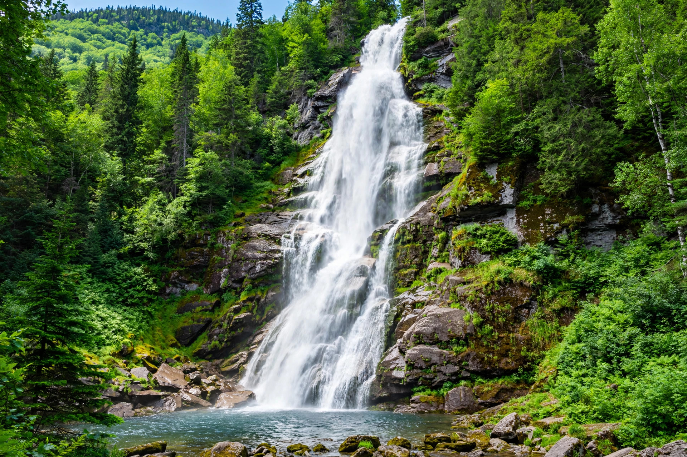

Waterfalls of Quebec
One is taller than Niagara. The rest are the reason to keep driving — seven falls worth planning around.

Quebec's rivers drop off the Canadian Shield in spectacular fashion, and the falls are some of the most accessible adventure in the province — most are a short walk from the parking lot, not a backcountry expedition. Go in May or June for maximum water, or in winter when several of them freeze into cathedrals of ice.
Chute Montmorency
Near Quebec City · 83 m · The icon
Taller than Niagara and ten minutes from downtown Quebec City. A cable car rides the cliff beside the falls, a staircase clings to the rock face, and a suspension bridge crosses the crest — you can experience it three ways in one afternoon. In winter the spray freezes into a famous ice cone at the base. The single most-visited natural site in the province, and it earns it.
Canyon Sainte-Anne
Beaupré · 74 m · The gorge
Twenty minutes east of Quebec City, the Sainte-Anne river pours 74 metres into a narrow billion-year-old gorge, crossed by three suspension bridges — including one right over the falls. It's the more dramatic, wilder-feeling sibling to Montmorency, and the canyon trails are excellent. Easy to pair with Mont-Sainte-Anne or Île d'Orléans.
Chute Ouiatchouan
Val-Jalbert, Lac-Saint-Jean · 72 m · The historic one
A 72-metre fall thundering beside a preserved 1920s pulp-mill company town — Val-Jalbert is one of Quebec's great heritage sites, and the waterfall is its beating heart. Walk the mill village, cross the canyon on the footbridge, and ride the cable car down the cliff face. Worth the drive north on its own.
Chutes du Moulin (Chutes de Plaisance)
Outaouais · 63 m in three drops · The surprise
Most visitors to the Outaouais never hear about these — three cascades totalling 63 metres on the Rivière de la Petite Nation, inside Parc national de Plaisance. A lookout, interpretation panels, and riverside trails tell the story of the vanished mill town of North Nation Mills. Best at spring melt; the park itself is a birdwatching hotspot.
Voile de la Mariée, Sept Chutes
Saint-Zénon, Lanaudière · 60 m · The hiker's falls
The "Bride's Veil" is the crown of the Parc régional des Sept-Chutes — a 60-metre ribbon of water on the Rivière Noire, reached by marked trails through genuinely wild forest. The park's six trails range from easy to serious, so you can make it a stroll or a full day. An hour and a half from Montreal.
Parc des Chutes, Rivière-du-Loup
Bas-Saint-Laurent · 33 m · The downtown falls
A 33-metre waterfall in the middle of town — two footbridges frame it from above and below, 9 km of trails run through the riverside forest, and a century-old power station still hums beside the water. In winter the cliffs become an ice-climbing venue. The perfect leg-stretcher on the drive toward the Gaspésie.
Chute du Diable
Ferme-Neuve, Upper Laurentians · The wild one
Deep in Antoine-Labelle country near the Montagne du Diable, this powerful single drop is the falls for people who like their waterfalls without railings and crowds. The Upper Laurentians are Quebec's last great road-trip frontier — come for the falls, stay for the empty lakes and the dark skies. See also our Best Hikes for the mountain next door.
Honourable mention: the frozen ones
Everywhere · Winter · A second season
Several of these falls are arguably better in winter. Montmorency's ice cone, the frozen walls at Rivière-du-Loup's ice-climbing park, and the ice curtains that form in the Hautes-Gorges turn waterfall season into a year-round affair. If you're visiting between December and March, ask locally what's frozen — it's a whole separate sport.
Waterfall practicalities
- Peak flow: late April through June, at spring melt. By August some of the smaller falls are a trickle — the big seven on this list run year-round.
- Access: most of these are short walks from parking; only Sept Chutes and Chute du Diable ask for real hiking boots.
- Fees: Montmorency, Canyon Sainte-Anne, and Val-Jalbert are paid attractions; the regional parks charge modest entry.
- Photography: morning light is kindest, and a polarizing filter tames the spray glare. The lookouts at Montmorency face west — afternoons are golden.
Keep exploring: Best Hikes, Ski Hills, and the Adventure hub — or the full Quebec Outdoors guide.